Cascading Style Sheets, or CSS, is a scripting language used to characterize the layout of an HTML document. CSS lets web developers determine how HTML components are to be viewed on various platforms and screen sizes.
One of the most essential techniques is the use of media queries, which allow developers to apply different styles based on the characteristics of the device, such as its screen size or resolution. Another powerful technique in responsive design is the use of CSS Grid and Flexbox, which help create flexible, fluid layouts. CSS Grid allows developers to define complex grid structures that automatically adjust based on the available space, while Flexbox is ideal for aligning items and creating responsive containers that adjust to their content
There are 2 kinds of lists in HTML: unordered or bulleted lists and ordered or numbered lists.
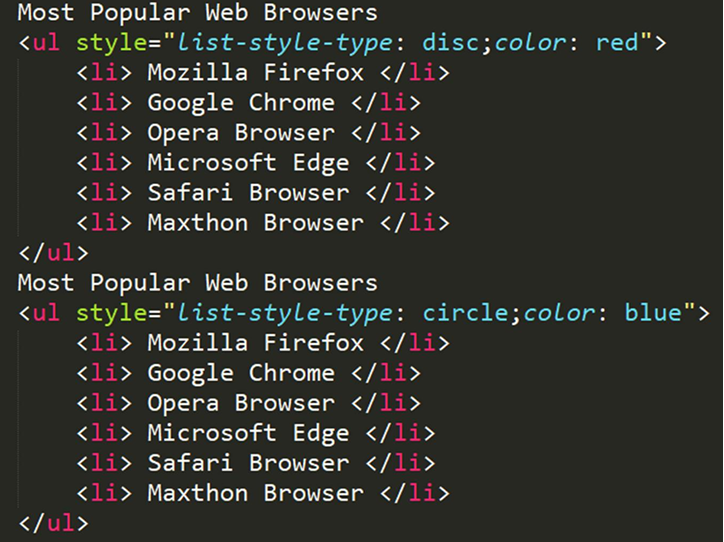 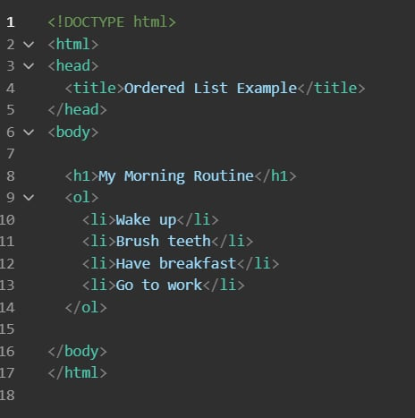The <ul> and <ul> tags are used to create unordered or bulleted lists. The <ol> and <ol> tags are used to create ordered lists or numbered lists. Items in the lists are added by using the <li> and </li> tags.
An ordered list, sometimes called a numbered list, is useful for presenting a series of steps that the user should perform in order. To create an ordered list, you use the lt;ol>and </ol> tag pair. The ordered list that you create will consist of two or more items. To specify each list item, which is an entry within an ordered or unordered list, you use the <li> and </li> tag pair
By default, when you create an ordered list, your browser can use the numbers 1, 2, 3, and so on to precede each of the list items. Depending on the list content, there can be instances when you have to use letters or even Roman numerals for each list item. To control the type of numbering the browser uses within an ordered list, you can use a CSS property list-style-type.
An unordered list, often called a bulleted list, contains a list of items in no particular order, such as a grocery lists, features for a new product, or browsers that support a particular HTML tag or attribute. To create an unordered list within a webpage, you use the ul and ul tag pair. Again to identify the items within the list, you can use the li and li list item tag pair.
The list-style-type property is used to define the style of the list item marker in unordered lists. The disc value sets the list item marker to a bullet. The circle value sets the list item marker to a circle. The square value sets the list item marker to a square. The none value will not display markers on list items
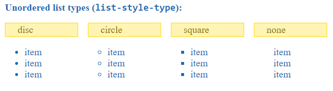The list-style-image property used to specify an image as the list item marker in unordered lists. property in CSS is used to replace the default bullet points in a list (<ul> or <ol>) with a custom image. Instead of a plain circle or number, you can use an image like a checkmark, star, or icon by providing its URL. This makes lists more visually appealing and personalized. It's important to use small-sized images so the list stays clean and aligned properly. If the image fails to load, browsers automatically fall back to showing a regular bullet.
The list-style-position property specifies the position of the list item marker in unordered lists. The outside value means that the bullet points will be outside the list item. The start of each line of a list item will be aligned vertically. The inside value means that the bullet points will be inside the list item. The list item will be part of the text and push the text at the start.
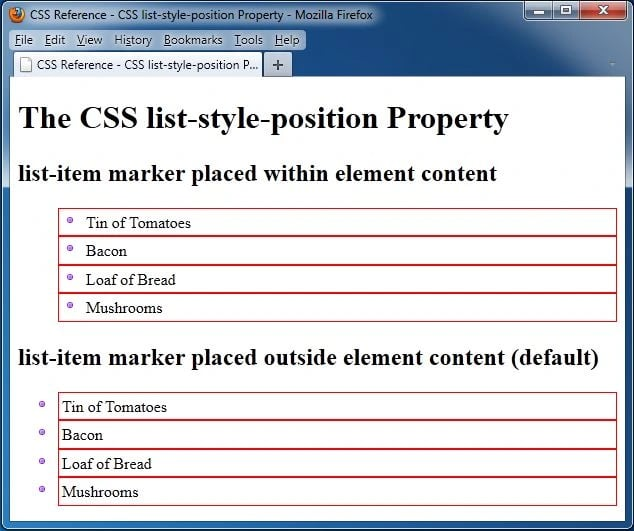The list-style shorthand property in CSS lets you set list-style-type, list-style-position, and list-style-image all at once, in any order. It controls the bullet style, its position (inside or outside the text), and optionally replaces the bullet with a custom image. If some parts are missing, the browser uses default values.
HTML also supports description lists.A description list is a list of terms, with a description of each term.
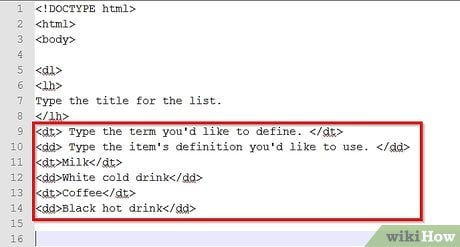Semantic elements in HTML clearly describe their content and its meaning, like <header>, <section>, <article>, or <footer>, making webpages more accessible and easier to understand for both users and search engines. Non-semantic elements, like <div> and <span>, have no inherent meaning and are used primarily for structure or styling, requiring additional attributes to give them context. The key difference is that semantic elements provide meaningful context, improving accessibility and SEO, while non-semantic elements are purely functional and require extra work to convey purpose.
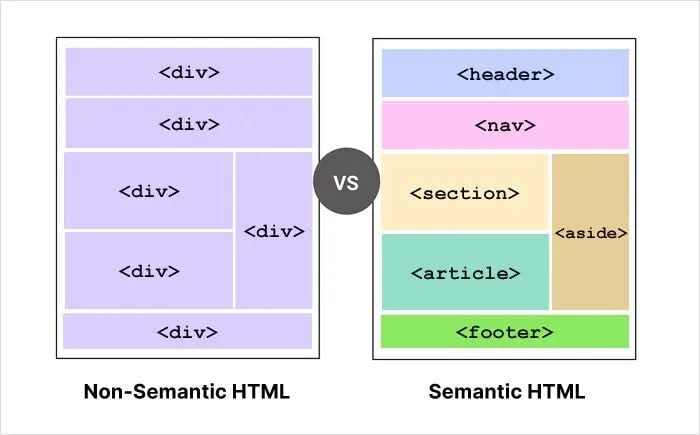Semantic elements are HTML tags that carry specific meanings about the content they enclose, helping both developers and search engines understand the structure of a web page. Examples of semantic elements include header, article, footer, section, and nav.
The section element is used to define distinct sections of content within a webpage, often with a specific theme or topic. It is commonly used for large portions of content like chapters, an introduction, or news items. For example, a webpage could include sections for the introduction, main content, and contact information.
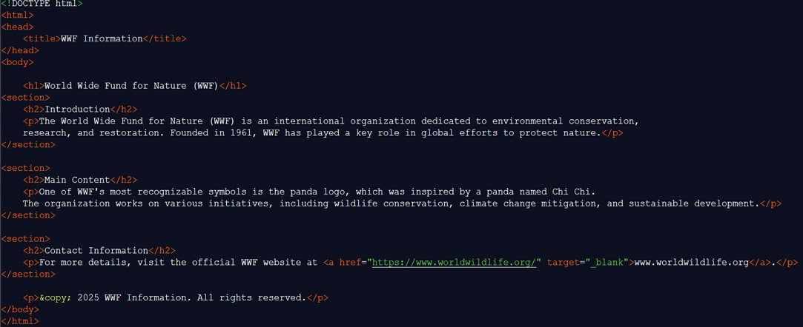The article element specifies independent, self-contained content that could stand alone and be distributed separately from the rest of the webpage. An article should make sense on its own and it should be possible to distribute it independently from the rest of the site.
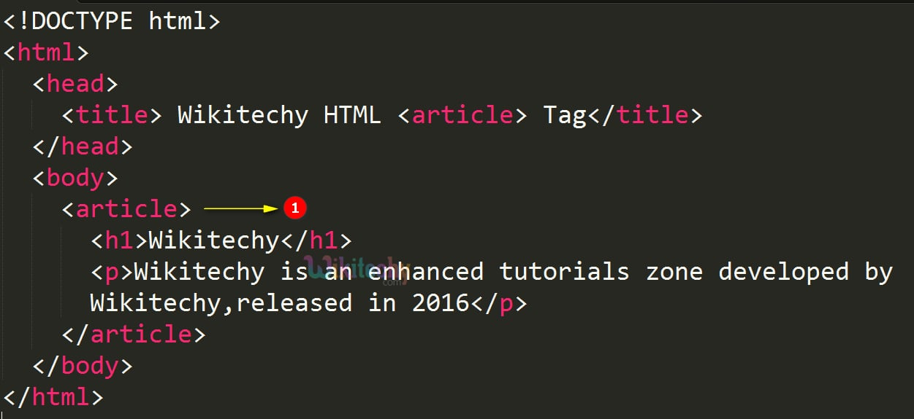The footer element defines a footer for a document or section, typically containing important information such as authorship details, copyright information, contact details, a sitemap, or links to related documents.
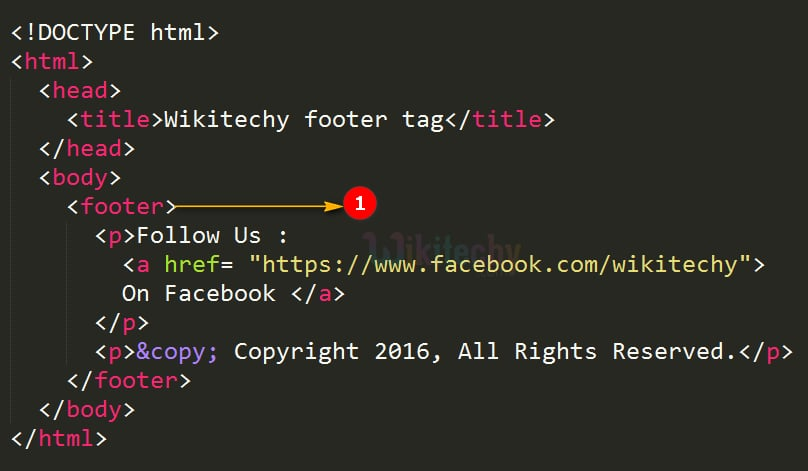The nav element is designed to contain a set of navigation links that guide users through a website’s primary sections. It is important to note that not all links on a webpage should be placed inside a nav element; only major blocks of navigation links, such as a site’s menu or table of contents belong here.
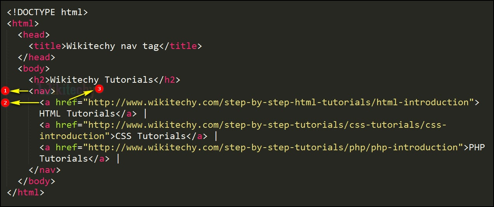The aside element is used to define content that is related to the surrounding content but can be considered as secondary or tangential. It is often used for sidebars, pull quotes, advertisements, or other supplementary content that enhances the main topic of the page but doesn’t directly contribute to the primary narrative.
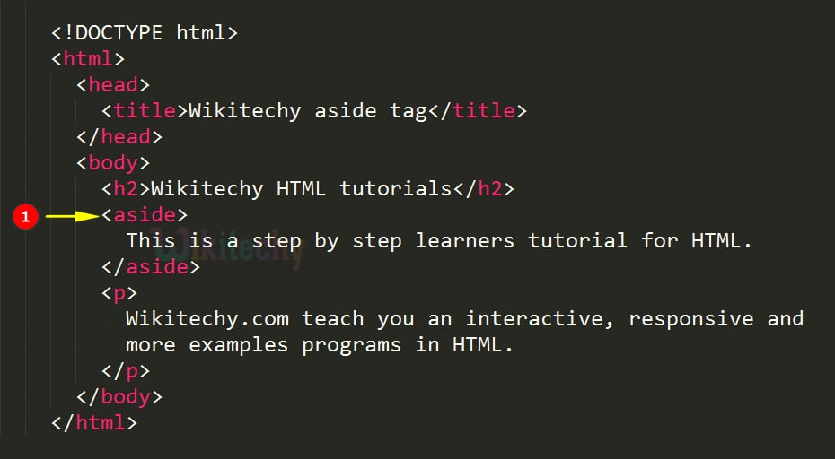The figure element is used to represent self-contained content, such as illustrations, diagrams, photos, or code listings, that is typically accompanied by a caption. The figcaption element, which provides a description or caption for the content inside the figure element, can be placed either at the beginning or the end of the figure.
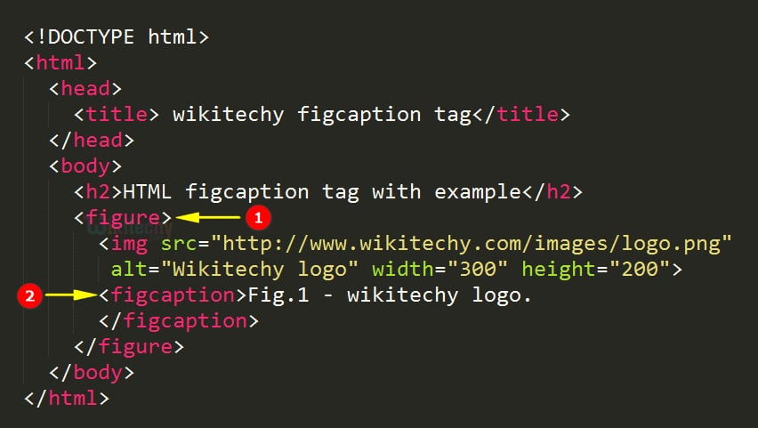The non-semantic elements do not provide any intrinsic meaning about the content they contain. These include tags like <div> and <span>, which are used primarily for layout and styling purposes rather than to convey content structure.
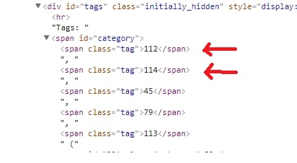